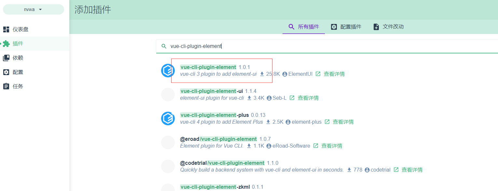

VUE Study Day15 - vue-cli
子车轻罗 2021/2/28 vue学习提升
# 安装vue脚手架
安装3.x版本的Vue脚手架：
npm install -g @vue/cli
分析Vue脚手架生成的项目结构
node_modules:依赖包目录
public：静态资源目录
src：源码目录
src/assets:资源目录
src/components：组件目录
src/views:视图组件目录
src/App.vue:根组件
src/main.js:入口js
src/router.js:路由js
babel.config.js:babel配置文件
.eslintrc.js:
1
2
3
4
5
6
7
8
9
10
11
12
2
3
4
5
6
7
8
9
10
11
12
# 使用vue ui新建项目
执行vue ui进入dashboard
选择Vue项目管理器
创建
选择项目存放目录
创建项目
详情：包管理器选择npm，项目名随意，git commit信息随意

预设：第一次可以选择手动配置，如果以前配置过也可以选择模板
功能：将babel、vuex、router、linter/formatter、使用配置文件(use config)、choose vue version(低版本没有)打开
配置:选择eslint + standard config，其他按需
是否存取预设：按需即可
# 初始化项目
清空app.vue，做基本 配置
<template> <div>HELLO world</div> </template> <script> export default { data () { return {} } } </script> <style lang="less" scoped> </style>1
2
3
4
5
6
7
8
9
10
11
12
13
14删除src/components/HelloWorld.vue
# 安装插件
# elementui
选择插件-安装插件
# 
修改配置，改为按需导入
# 安装依赖
# 运行依赖
# axios
依赖-安装依赖-运行依赖
安装后配置main.js
import axios from 'axios'
// 默认接口地址
axios.defaults.baseURL = 'http://127.0.0.1:8888/api/private/v1/'
// 注册为全局组件
Vue.prototype.$http = axios
1
2
3
4
5
2
3
4
5
# 树形数据展示
vue-table-with-tree-grid
使用第三方插件vue-table-with-tree-grid展示分类数据，见day10
# 进度条
先打开项目控制台，打开依赖，安装nprogress 打开main.js，编写如下代码
//导入进度条插件
import NProgress from 'nprogress'
//导入进度条样式
import 'nprogress/nprogress.css'
.....
//请求在到达服务器之前，先会调用use中的这个回调函数来添加请求头信息
axios.interceptors.request.use(config => {
//当进入request拦截器，表示发送了请求，我们就开启进度条
NProgress.start()
//为请求头对象，添加token验证的Authorization字段
config.headers.Authorization = window.sessionStorage.getItem("token")
//必须返回config
return config
})
//在response拦截器中，隐藏进度条
axios.interceptors.response.use(config =>{
//当进入response拦截器，表示请求已经结束，我们就结束进度条
NProgress.done()
return config
})
1
2
3
4
5
6
7
8
9
10
11
12
13
14
15
16
17
18
19
20
2
3
4
5
6
7
8
9
10
11
12
13
14
15
16
17
18
19
20
# 开发依赖
# less-loader
不能安装8.0.0版本，会有报错，手动命令行安装7.3.0版本
npm install less-loader@7.3.0
# less
安装后需要重新编译项目
# 安装其他组件
# 字体
具体见day7电商
# 富文本插件
见day12
# 图标插件
见day13